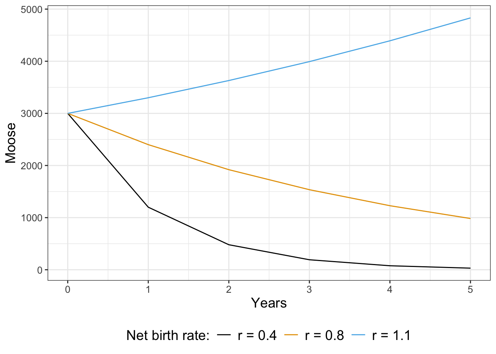
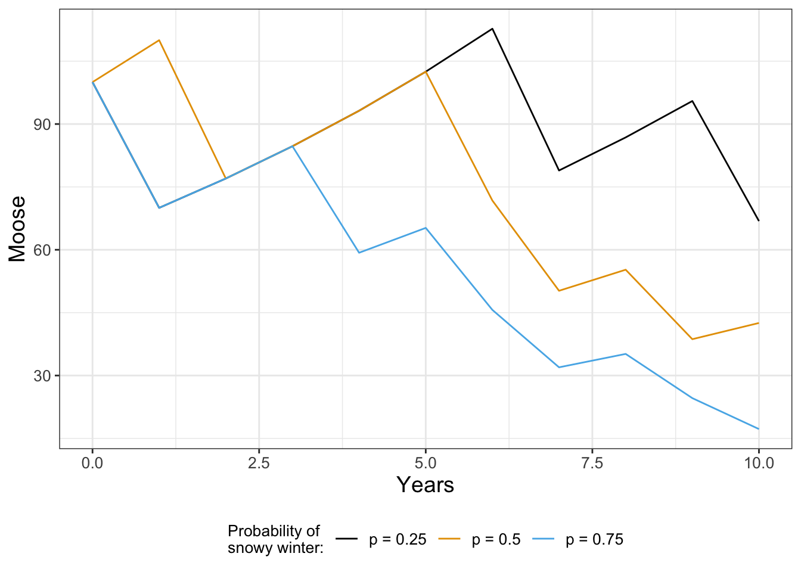
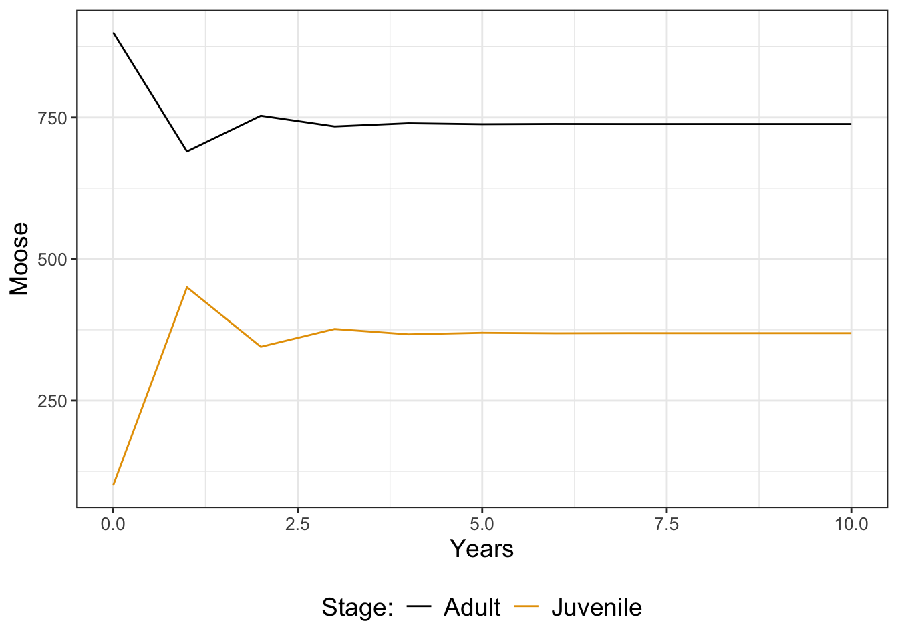

M0 <- 3000 # Initial population of moose
N <- 5 # Number of years we simulate
moose <- function(r) {
out_moose <- array(M0, dim = N+1)
for (i in 1:N) {
out_moose[i + 1] <- r * out_moose[i]
}
return(out_moose)
}21 Stochastic Biological Systems
21.1 Introducing stochastic effects
Up to this point we have studied deterministic differential equations. We use the word deterministic because given an initial condition and parameters, the solution trajectory is known. In this part we are going to study stochastic differential equations or SDEs for short. A stochastic differential equation means that the differential equation is subject to random effects - either in the parameters (which may cause a change in the stability for a time) or in the variables themselves.
Stochastic differential equations can be studied using computational approaches. This part will give you an introduction to SDEs with some focus on solution techniques, which I hope you will be able to apply in other contexts relevant to you. Understanding how to model SDEs requires learning some new mathematics and approaches to numerical simulation. Let’s get started!
Note
This chapter uses following libraries: ggplot2, tibble (all part of the tidyverse), and the matrix multiplication operator %*% . See Section 2.3 on how to install packages. Prior to running any code in this section, include library(tidyverse).
21.2 A discrete dynamical system
Let’s focus on an example that involves discrete dynamical systems. Moose are large animals (part of the deer family), weighing 1000 pounds, that can be found in Northern Minnesota. The moose population was 8000 in the early 2000s, but recent surveys show the population is maybe stabilized at 3000.
A starting model that describes their population dynamics is the discrete dynamical system in Equation 21.1:
\[ M_{t+1} = M_{t} + b \cdot M_{t} - d \cdot M_{t}, \tag{21.1}\]
where \(M_{t}\) is the population of the moose in year \(t\), and \(b\) the birth rate and \(d\) the death rate. Equation 21.1 can be reduced down to \(M_{t+1}=r M_{t}\) where \(r=1+b-d\) is the net birth/death rate. This model states that the population of moose in the next year is proportional to the current population.
Equation 21.1 is a little bit different from a continuous dynamical system, but can be simulated pretty easily by defining a function.
Notice how the function moose returns the current population of moose after \(N\) years with the net birth rate \(r\). Let’s take a look at the results for different values of \(r\) (Figure 21.1).

Notice how for some values of \(r\) the population starts to decline, stay the same, or increase. To analyze Equation 21.1, just like with a continuous differential equation we want to look for solutions that are in steady state, or ones where the population is staying the same. In other words this means that \(M_{t+1}=M_{t}\), or \(M_{t}=rM_{t}\). If we simplify this expression this means that \(M_{t}-r M_{t}=0\), or \((1-r)M_{t}=0\). Assuming that \(M_{t}\) is not equal to zero, then this equation is consistent only when \(r=1\). This makes sense: we know \(r=1-b-d\), so the only way this can be one is if \(b=d\), or the births balance out the deaths.
Okay, so we found our equilibrium solution. The next goal is to determine the general solution to Equation 21.1. In Chapter 7 for continuous differential equations, a starting point for a general solution was an exponential function. For discrete dynamical systems we will also assume a general solution is exponential, but this time we represent the solution as \(M_{t}=M_{0} \cdot v^{t}\), which is an exponential equation. The parameter \(M_{0}\) is the initial population of moose (here it equals 3000). Now let’s determine \(v\) in Equation 21.1:
\[ M_{t+1} = r M_{t} \rightarrow 3000 \cdot v^{t+1} = r \cdot 3000 \cdot v^{t} \]
Our goal is to figure out a value for \(v\) that is consistent with this expression. Just like we did with continuous differential equations we can arrange the following equation, using the fact that \(v^{t+1}=v^{t}\cdot v\):
\[ 3000 v^{t} (v-r) = 0 \]
Since we assume \(v\neq 0\), the only possibility is if \(v=r\). Equation 21.2 represents the general solution for Equation 21.1:
\[ M_{t}=3000 r^{t} \tag{21.2}\]
We know that if \(r>1\) we have exponential growth exponential decay when \(r<1\) exponential decay, consistent with our results above.
There is some comfort here: just like in continuous systems we find eigenvalues that determine the stability of the equilibrium solution. For discrete dynamical systems the stability is based on the value of an eigenvalue relative to 1 (not 0). Note: this is a good reminder to be aware if the model is based in continuous or discrete time!
21.3 Environmental stochasticity
It may be the case that environmental effects drastically change the net birth rate from one year to the next. For example during snowy winters the net birth rate changes because it is difficult to find food (Carroll 2013). For our purposes, let’s say that in snowy winters \(r\) changes from \(1.1\) to \(0.7\). This would be a pretty drastic effect on the system - when \(r=1.1\) the moose population grows exponentially and when \(r=0.7\) the moose population decays exponentially.
A snowy winter occurs randomly. One way to model this randomness is to create a conditional statement based on the probability of it being snowy, defined on a scale from 0 to 1. How we implement this is by writing a function that draws a uniform random number each year and adjust the net birth rate:
# We use the snowfall_rate as an input variable
moose_snow <- function(snowfall_prob) {
out_moose <- array(M0, dim = N+1)
for (i in 1:N) {
r <- 1.1 # Normal net birth rate
if (runif(1) < snowfall_prob) { # We are in a snowy winter
r <- 0.7 # Decreased birth rate
}
out_moose[i + 1] <- r * out_moose[i]
}
return(out_moose)
}Figure 21.2 displays different solution trajectories of the moose population over time for different probabilities of a deep snowpack.

If you tried generating Figure 21.2 on your own you would not obtain the same figure. We are drawing random numbers for each year, so you should have different trajectories. While this may seem like a problem, one key thing that we will learn later in Chapter 22 is there is a stronger underlying signal when we compute multiple simulations and then compute an ensemble average.
As you can see when the probability of a snowy winter is very high (\(p = 0.75\)), the population decays exponentially. If that probability is lower, the moose population can still increase, but one bad year does knock the population down.
21.3.1 Improving function evaluation speed for moose_snow
The code for the moose_snow presented above utilizes for loops and an if statement. While the coding structure is readable, it may not be the most efficient. Computer speeds and times vary, but using the the timing functions in R suggests that a baseline time of evaluation:
set.seed(251608)
start_time <- Sys.time()
M0 <- 3000 # Initial population of moose
N <- 100 # Number of years we simulate
moose_result <- moose_snow(0.37)
end_time <- Sys.time()
# determine the time difference:
moose_baseline <- end_time - start_time
# print the result
moose_baselineTime difference of 0.00135994 secsLet’s unpack this code a little bit:
set.seed(251608)sets the random number generator so the results can be reproducible in terms of the random numbers generated (so you can reproduce this on your own).- The function
Sys.time()works like a stopwatch. With the variablesstart_timeandend_timewe know the exact computer time it takes to evaluate this function (which is the difference betweenend_timeandstart_time).
There are three simple adjustments we can do to moose_snow to speed it up:
- Define a vector of uniform random numbers with
runif(N)thanrunif(1). - Use that vector of random numbers to generate another that is the different birth rates in regular or snowy winters. The function
ifelseinRdoes just that: if a condition is true (here a snowy winter), then the value for \(r\) is 0.7, else it is 1.1. - Because our moose population is determine iteratively (\(M_{t+1}=rM_{t}\)), at time \(t+1\) the population is a product of all the previous iterations. The function
cumprod(cumulative product) can do that. So for a vector \(\vec{v}=\begin{pmatrix} v_{1} & v_{2} & v_{3} \end{pmatrix}\), the cumulative product of \(\vec{v}\) is \(\begin{pmatrix} v_{1} & v_{1} \cdot v_{2} & v_{1} \cdot v_{2} \cdot v_{3} \end{pmatrix}\).
The total of these three adjustments is the following function I call moose_snow_fast:
moose_snow_fast = function(snowfall_prob) {
prob_vec <- runif(N) # Set up a vector of probabilities
r_vec = ifelse(prob_vec < snowfall_prob, 0.7, 1.1) # Determine the growth rate each year
# Set up the output vector with the initial value and r_vec
out_moose <- c(M0, r_vec)
# Compute the cumulative product
out_moose <- cumprod(out_moose)
return(out_moose)
}Now let’s compare the time of this adjusted code:
set.seed(251608)
start_time <- Sys.time()
M0 <- 3000 # Initial population of moose
N <- 100 # Number of years we simulate
moose_result <- moose_snow_fast(0.37)
end_time <- Sys.time()
# determine the time difference:
moose_fast <- end_time - start_time
# print the result
moose_fastTime difference of 0.001366138 secsWhen dealing with complex code that takes a long time evaluate, it is helpful sometimes to see what performance gains can be made, and a good place to start is “vectorizing” your code or evaluating the neccesity of for loops or if statements.
21.4 Discrete systems of equations
Another way to extend Equation 21.1 is to account for both adult (\(M\)) and juvenile (\(J\)) moose populations with Equation 21.3:
\[ \begin{split} J_{t+1} &=f \cdot M_{t} \\ M_{t+1} &= g \cdot J_{t} + p \cdot M_{t} \end{split} \tag{21.3}\]
Equation 21.3 is a little different from Equation 21.1 because it includes juvenile and adult moose populations, which have the following parameters:
- \(f\): represents the birth rate of new juvenile moose
- \(g\): represents the maturation rate of juvenile moose
- \(p\): represents the survival probability of adult moose
We can code up this model using R in the following way:
M0 <- 900 # Initial population of adult moose
J0 <- 100 # Initial population of juvenile moose
N <- 10 # Number of years we run the simulation
moose_two_stage <- function(f, g, p) {
# f: birth rate of new juvenile moose
# g: maturation rate of juvenile moose
# p: survival probability of adult moose
# Create a data frame of moose to return
out_moose <- tibble(
years = 0:N,
adult = M0,
juvenile = J0
)
# And now the dynamics
for (i in 1:N) {
out_moose$juvenile[i + 1] <- f * out_moose$adult[i]
out_moose$adult[i + 1] <-
g * out_moose$juvenile[i] + p * out_moose$adult[i]
}
return(out_moose)
}To simulate the dynamics we just call the function moose_two_stage and plot in Figure 21.3:
moose_two_stage_rates <- moose_two_stage(
f = 0.5,
g = 0.6,
p = 0.7
)
ggplot(data = moose_two_stage_rates) +
geom_line(aes(x = years, y = adult), color = "red") +
geom_line(aes(x = years, y = juvenile), color = "blue") +
labs(
x = "Years",
y = "Moose"
)
Looking at Figure 21.3, it seems like both populations stabilize after a few years. We could further analyze this model for stable population states (in fact, it would be similar to determining eigenvalues as in Chapter 18). Additional extensions could also incorporate adjustments to the parameters \(f\), \(g\), and \(p\) in snow years (Exercise 21.6).
As you can see, introducing stochastic or random effects to a model yields some interesting (and perhaps more realistic) results. Next we will examine how computing can further explore stochastic models and how to generate expected patterns from all this randomness. Onward!
21.4.1 A matrix formulation for discrete systems of equations
Equation 21.3 can also be written with matrix notation (similar to how we used matrices to understand systems on linear differential equations in Chapter 15:
\[ \begin{split} J_{t+1} &=f \cdot M_{t} \\ M_{t+1} &= g \cdot J_{t} + p \cdot M_{t} \end{split} \rightarrow \begin{pmatrix} J_{t+1} \\ M_{t+1} \end{pmatrix} = \begin{pmatrix} 0 & f \\ g & p \end{pmatrix} \begin{pmatrix} J_{t} \\ M_{t} \end{pmatrix} \tag{21.4}\]
In Equation 21.4 we can identify the matrix \(\displaystyle A=\begin{pmatrix} 0 & f \\ g & p \end{pmatrix}\), then sample code with the function moose_matrix is shown below:
moose_matrix = function(N, initial_population, A, round = TRUE) {
# N: number of iterations
# initial_population: starting value for moose and juveniles
# A: growth matrix
# round: an option of we want to present the results in whole numbers
M <- initial_population
R <- array(0, dim = c(2, N+1)) # holds results- add one more entriy
R[,1] <- M
for(i in seq(2, N+1)) {
M <- A %*% M # the %*% operator is matrix multiplication
R[, i] <- M
}
# Results:
R <- data.frame(t = seq(0, N), J = R[1,], M = R[2,])
# If we desire whole numbers, we can return that as well:
if(round) { R = round(R) }
return(R)
}Notice how the function moose_matrix has an option called round, which will round the results of the population to the nearest whole number. To evaluate this function, we can need to define the initial population and entries of the matrix A:
# Initial population:
M0 <- 900 # Adult moose
J0 <- 100 # Juvenile moose
initial_moose <- c(M=900, J=100)
# Coefficients:
f <- 0.5
g <- 0.6
p <- 0.7
# Define your growth matrix A
A <- matrix(c(0, f, g, p), ncol=2, byrow=T)
# Number of timesteps
N <- 10
moose_matrix(N, initial_moose, A)The function moose_matrix can be extended to even more systems of populations. Because matrix multiplication in R is computationally optimized, you may see a noticeable difference in evaluation time with this approach for larger systems of equations. optimized can be computationally efficient.
21.5 Exercises
Exercise 21.1 Re-run the moose population model with probabilities of adjusting to the deep snowpack at \(p = 0, \; 0.1, \; 0.9, \mbox{ and} \;1\). How does adjusting the probability affect the moose population after 10 years?
Exercise 21.2 Modify the function moose_snow so that runif(1) < snowfall_prob) is changed to runif(1) > snowfall_prob). How does that code change the resulting solution trajectories in Figure 21.2? Why is this not the correct way to code changes in the net birth rate in deep snowpacks?
Exercise 21.3 Modify the two stage moose population model (Equation 21.3) with the following parameters and plot the resulting adult and juvenile populations:
- \(f = 0.6\), \(g = 0.6\), \(p = 0.7\)
- \(f = 0.5\), \(g = 0.6\), \(p = 0.4\)
- \(f = 0.3\), \(g = 0.6\), \(p = 0.5\)
You may assume \(M_{0} = 900\) and \(J_{0}=100\).
Exercise 21.4 This exercise will have you modify the function moose_matrix to consider different growth matrices \(A\) in snowy winters. Let’s say the birth rate \(f\) juvenile moose is 0.5, the maturation rate \(g\) is 0.6, and the survival probability of adult moose is 0.7. But in snowy winters, the survival probability of adult moose drops to 0.4.
- Identify the entries of the two matrices in regular winters (
A_reg) and snow winters (A_snowy). - The following function defines
moose_matrix_snowto account the probability of a snowy winter:
moose_matrix_snow = function(N,
initial_population,
A_regular,
A_snow,
snowfall_prob,
round = TRUE) {
# N: number of iterations
# initial_population: starting value for moose and juveniles
# A_regular: growth matrix in regular winters
# A_snow: growth matrix in snowy winters
# snowfall_prob: probability of a snowy winter
# round: an option of we want to present the results in whole numbers
M <- initial_population
R <- array(0, dim = c(2, N+1)) # holds results- add one more entriy
R[,1] <- M
for(i in seq(2, N+1)) {
if(runif(1)< snowfall_prob) { # it is a snowy winter
M <- A_snow %*% M # snowy winter the %*% operator is matrix multiplication
} else { # it is not a snowy winter
M <- A_regular %*%M
}
R[, i] <- M
}
# Results:
R <- data.frame(t = seq(0, N), J = R[1,], M = R[2,])
# If we desire whole numbers, we can return it
if(round) { R$J = round(R$J); R$M = round(R$M) }
return(R)
}Store this function in your R workspace. Let \(N=10\), and initially there are 900 adult and 100 juvenile moose.. Evaluate the effect of the probability of a snowfall winter (snowfall_prob = 0.1, snowfall_prob = 0.3, snowfall_prob = 0.5) on the juvenile and adult moose populations. Compare your results to the case when snowy winters are not taken into consideration.
Exercise 21.5 You are playing a casino game. If you win the game you earn $10. If you lose the game you lose your bet of $10. The probability of winning or losing is 50-50 (0.50). You decide to play the game 20 times and then cash out your net earnings.
- Write code that is able to simulate this stochastic process. Plot your results.
- Run this code five different times. What do you think your long term net earnings would be?
- Now assume that you have a 40% chance of winning. Re-run your code to see how that affects your net earnings.
Exercise 21.6 Modify the two stage moose population model (Equation 21.5) to account for years with large snowdepths. In normal years, \(f=0.5\), \(g=0.6\), \(p=0.7\). However for snowy years, \(f=0.3\), \(g=0.6\), \(p=0.5\). Generate code that can account for these variable rates (similar to the moose population model). You may assume \(M_{0} = 900\), \(J_{0}=100\), and \(N\) (the number of years) is 30. Plot simulations when the probability of snowy winters is \(s=0.05\) \(s=0.10\), or \(s=0.20\). Comment on the long-term dynamics of the moose for these simulations.
Exercise 21.7 A population grows according the the growth law \(x_{t+1}=r_{t}x_{t}\).
- Determine the general solution to this discrete dynamical system.
- Plot a sample growth curve with \(r_{t}=0.86\) and \(r_{t}=1.16\), with \(x_{0}=100\). Show your solution for \(t=50\) generations.
- Now consider a model where \(r_{t}=0.86\) with probability 1/2 and \(r_{t}=1.16\) with probability 1/2. Write a function that will predict the population after \(t=50\). Show three or four different realizations of this stochastic process.
Exercise 21.8 (Inspired by Logan and Wolesensky (2009)) A rectangular preserve has area \(a\). At one end of the boundary of the preserve (contained within the area), is a small band of land of area (\(a_{b}\)) from which animals disperse into the wilderness. Only animals at that eged disperse. Let \(u_{t}\) be the number of animals in \(a\) at any time \(t\). The growth rate of all the animals in \(a\) is \(r\). The rate at which animals disperse from the strip is proportional to the fraction of the animals in the edge band, with proportionality constant \(\epsilon\).
- Draw a picture of the situation described above.
- Explain why the equation that describes the dynamics is \(\displaystyle u_{t+1}=r \, u_{t} - \epsilon \frac{a_{b}}{a} u_{t}\).
- Determine conditions on the parameter \(r\) as a function of the other parameters under which the population is growing.
Carroll, Cameron Jewett. 2013. “Modeling Winter Severity and Harvest of Moose: Impacts of Nutrition and Predation.” PhD thesis, Fairbanks, Alaska: University of Alaska Fairbanks.
Logan, J. David, and William Wolesensky. 2009. Mathematical Methods in Biology. 1st ed. Hoboken, N.J: Wiley.